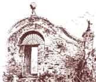

|
la
storia di un castello che vuole continuare a fare storia
Storia
Cenni
storici
Prospetto
cronologico.
Cenni
architettonici.
Rocca Brivio: ricerca
storica, rilievo, manutenzione
attività
Consolidamento
di una frana a cura dell'Associazione Vivai Pro Natura
immagini
interni
- esterni
echi di stampa
C'è
incertezza sul futuro utilizzo di Rocca Brivio
Con sfarzosi
costumi d'epoca. Rievocazione e impegno civile nella cerimonia
a Rocca Brivio
Sboccia
la primavera della Rocca
Guardie
svizzere in Rocca
|